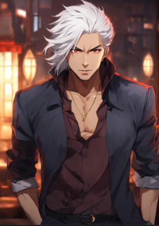

-
Major
Descrição
Major Kusanagi é uma ciborgue de alto desempenho com um corpo artificial e um cérebro humano. Ela é uma agente de elite da Seção 9.
-
Tachikoma
Descrição
Os Tachikomas são tanques de combate autônomos com inteligência artificial. Eles servem como auxiliares da Seção 9 e são conhecidos por sua personalidade peculiar, humor sarcástico e lealdade à Major.
-
Kuze
Descrição
Um ex-soldado e ciborgue com um forte senso de justiça, Kuze se torna um antagonista na segunda temporada do anime. Ele busca vingança contra o governo por tê-lo usado como arma em uma guerra cibernética e questiona o papel da tecnologia na guerra e no controle social.
-
Laughing Man

Descrição
hacker misterioso e vigilante que atua como um dos principais antagonistas da série. Sua identidade real nunca é revelada, mas ele é conhecido por sua risada maníaca.
-
Batou
Descrição
Parceiro de Major na Seção 9, Batou é outro ciborgue com um corpo artificial e um passado misterioso. Ele é um hacker talentoso e um especialista em combate corpo a corpo..
-
Daisuke Aramaki
Descrição
Aramaki é o grande chefe da Seção 9 e uma das poucas pessoas da operação com um corpo inteiramente humano. Ele tem vários contatos e é responsável pelo teor político da trama.